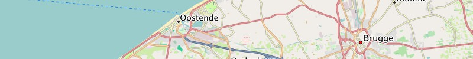
Belgium:
Garmin GPS-device: Belgium - install image for micro SD card (0.2 GB)Microsoft Windows: Belgium - archive for Garmin BaseCamp (0.2 GB)
Apple Mac OS X: Belgium - install archive for Garmin BaseCamp (0.2 GB)
All operating systems: Belgium - image folder for QLandkarte (0.2 GB)
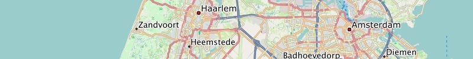
Netherlands:
Garmin GPS-device: Netherlands - install image for micro SD card (0.4 GB)Microsoft Windows: Netherlands - archive for Garmin BaseCamp (0.4 GB)
Apple Mac OS X: Netherlands - install archive for Garmin BaseCamp (0.4 GB)
All operating systems: Netherlands - image folder for QLandkarte (0.4 GB)

Great Britain:
Garmin GPS-device: Great Britain - install image for micro SD card (0.6 GB)Microsoft Windows: Great Britain - archive for Garmin BaseCamp (0.6 GB)
Apple Mac OS X: Great Britain - install archive for Garmin BaseCamp (0.6 GB)
All operating systems: Great Britain - image folder for QLandkarte (0.6 GB)
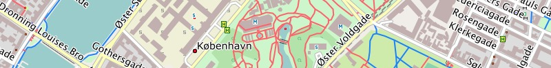
Denmark:
Garmin GPS-device: Denmark - install image for micro SD card (0.1 GB)Microsoft Windows: Denmark - archive for Garmin BaseCamp (0.1 GB)
Apple Mac OS X: Denmark - install archive for Garmin BaseCamp (0.1 GB)
All operating systems: Denmark - image folder for QLandkarte (0.1 GB)
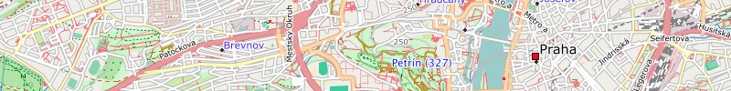
Czechia:
Garmin GPS-device: Czechia - install image for micro SD card (0.2 GB)Microsoft Windows: Czechia - archive for Garmin BaseCamp (0.2 GB)
Apple Mac OS X: Czechia - install archive for Garmin BaseCamp (0.2 GB)
All operating systems: Czechia - image folder for QLandkarte (0.2 GB)
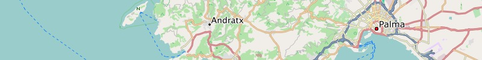
Spain:
Garmin GPS-device: Spain - install image for micro SD card (0.6 GB)Microsoft Windows: Spain - archive for Garmin BaseCamp (0.6 GB)
Apple Mac OS X: Spain - install archive for Garmin BaseCamp (0.6 GB)
All operating systems: Spain - image folder for QLandkarte (0.6 GB)
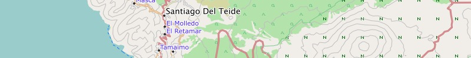
Canary Islands (Release 13.09):
Garmin GPS-device: Canary Islands - install image for micro SD card (0.02 GB)Microsoft Windows: Canary Islands - archive for Garmin BaseCamp (0.02 GB)
Apple Mac OS X: Canary Islands - install archive for Garmin BaseCamp (0.02 GB)
All operating systems: Canary Islands - image folder for QLandkarte (0.02 GB)
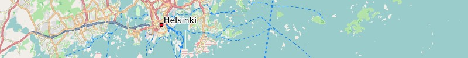
Finland:
Garmin GPS-device: Finland - install image for micro SD card (0.2 GB)Microsoft Windows: Finland - archive for Garmin BaseCamp (0.2 GB)
Apple Mac OS X: Finland - install archive for Garmin BaseCamp (0.2 GB)
All operating systems: Finland - image folder for QLandkarte (0.2 GB)
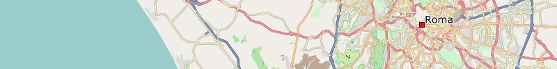
Italy:
Garmin GPS-device: Italy - install image for micro SD card (0.7 GB)Microsoft Windows: Italy - archive for Garmin BaseCamp (0.7 GB)
Apple Mac OS X: Italy - install archive for Garmin BaseCamp (0.7 GB)
All operating systems: Italy - image folder for QLandkarte (0.7 GB)
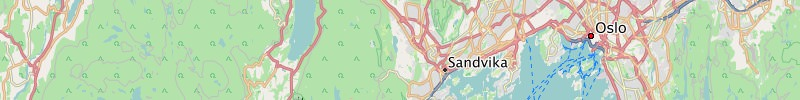
Norway:
Garmin GPS-device: Norway - install image for micro SD card (0.4 GB)Microsoft Windows: Norway - archive for Garmin BaseCamp (0.4 GB)
Apple Mac OS X: Norway - install archive for Garmin BaseCamp (0.4 GB)
All operating systems: Norway - image folder for QLandkarte (0.4 GB)

Bulgaria:
Garmin GPS-device: Bulgaria - install image for micro SD card (0.1 GB)Microsoft Windows: Bulgaria - archive for Garmin BaseCamp (0.1 GB)
Apple Mac OS X: Bulgaria - install archive for Garmin BaseCamp (0.1 GB)
All operating systems: Bulgaria - image folder for QLandkarte (0.1 GB)
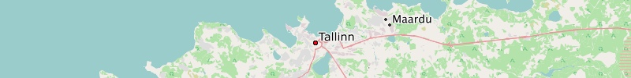
Estonia:
Garmin GPS-device: Estonia - install image for micro SD card (0.1 GB)Microsoft Windows: Estonia - archive for Garmin BaseCamp (0.1 GB)
Apple Mac OS X: Estonia - install archive for Garmin BaseCamp (0.1 GB)
All operating systems: Estonia - image folder for QLandkarte (0.1 GB)
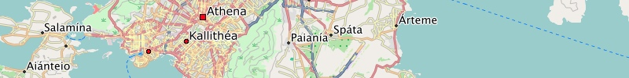
Greece:
Garmin GPS-device: Greece - install image for micro SD card (0.2 GB)Microsoft Windows: Greece - archive for Garmin BaseCamp (0.2 GB)
Apple Mac OS X: Greece - install archive for Garmin BaseCamp (0.2 GB)
All operating systems: Greece - image folder for QLandkarte (0.2 GB)
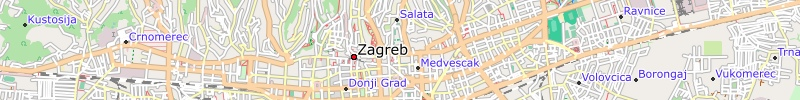
Croatia:
Garmin GPS-device: Croatia - install image for micro SD card (0.1 GB)Microsoft Windows: Croatia - archive for Garmin BaseCamp (0.1 GB)
Apple Mac OS X: Croatia - install archive for Garmin BaseCamp (0.1 GB)
All operating systems: Croatia - image folder for QLandkarte (0.1 GB)
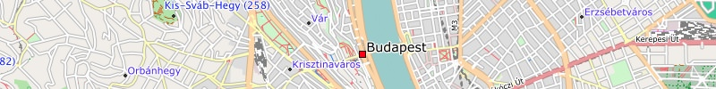
Hungary:
Garmin GPS-device: Hungary - install image for micro SD card (0.1 GB)Microsoft Windows: Hungary - archive for Garmin BaseCamp (0.1 GB)
Apple Mac OS X: Hungary - install archive for Garmin BaseCamp (0.1 GB)
All operating systems: Hungary - image folder for QLandkarte (0.1 GB)
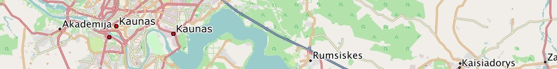
Lithuania:
Garmin GPS-device: Lithuania - install image for micro SD card (0.1 GB)Microsoft Windows: Lithuania - archive for Garmin BaseCamp (0.1 GB)
Apple Mac OS X: Lithuania - install archive for Garmin BaseCamp (0.1 GB)
All operating systems: Lithuania - image folder for QLandkarte (0.1 GB)
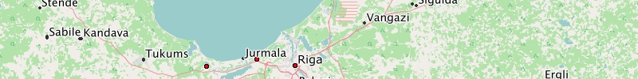
Latvia:
Garmin GPS-device: Latvia - install image for micro SD card (0.1 GB)Microsoft Windows: Latvia - archive for Garmin BaseCamp (0.1 GB)
Apple Mac OS X: Latvia - install archive for Garmin BaseCamp (0.1 GB)
All operating systems: Latvia - image folder for QLandkarte (0.1 GB)
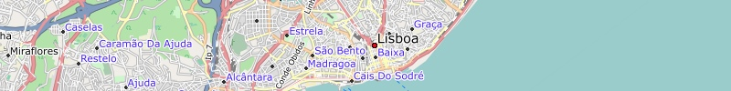
Portugal:
Garmin GPS-device: Portugal - install image for micro SD card (0.1 GB)Microsoft Windows: Portugal - archive for Garmin BaseCamp (0.1 GB)
Apple Mac OS X: Portugal - install archive for Garmin BaseCamp (0.1 GB)
All operating systems: Portugal - image folder for QLandkarte (0.1 GB)
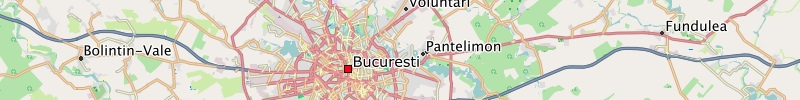
Romania:
Garmin GPS-device: Romania - install image for micro SD card (0.2 GB)Microsoft Windows: Romania - archive for Garmin BaseCamp (0.2 GB)
Apple Mac OS X: Romania - install archive for Garmin BaseCamp (0.2 GB)
All operating systems: Romania - image folder for QLandkarte (0.2 GB)
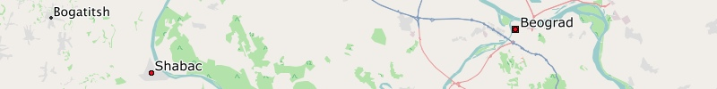
Serbia:
Garmin GPS-device: Serbia - install image for micro SD card (0.1 GB)Microsoft Windows: Serbia - archive for Garmin BaseCamp (0.1 GB)
Apple Mac OS X: Serbia - install archive for Garmin BaseCamp (0.1 GB)
All operating systems: Serbia - image folder for QLandkarte (0.1 GB)
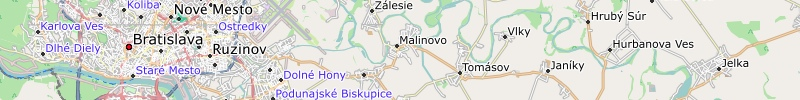
Slovakia:
Garmin GPS-device: Slovakia - install image for micro SD card (0.4 GB)Microsoft Windows: Slovakia - archive for Garmin BaseCamp (0.4 GB)
Apple Mac OS X: Slovakia - install archive for Garmin BaseCamp (0.4 GB)
All operating systems: Slovakia - image folder for QLandkarte (0.4 GB)
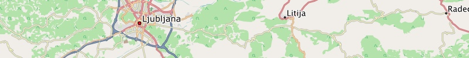
Slovenia:
Garmin GPS-device: Slovenia - install image for micro SD card (0.1 GB)Microsoft Windows: Slovenia - archive for Garmin BaseCamp (0.1 GB)
Apple Mac OS X: Slovenia - install archive for Garmin BaseCamp (0.1 GB)
All operating systems: Slovenia - image folder for QLandkarte (0.1 GB)
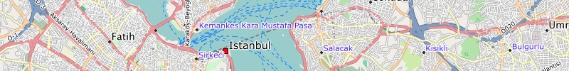
Turkey:
Garmin GPS-device: Turkey - install image for micro SD card (0.5 GB)Microsoft Windows: Turkey - archive for Garmin BaseCamp (0.5 GB)
Apple Mac OS X: Turkey - install archive for Garmin BaseCamp (0.5 GB)
All operating systems: Turkey - image folder for QLandkarte (0.5 GB)
By the way, sometimes we try things for fun, if you haven't found what you are looking for, you can explore the download area.
We wish you lots of fun with the Freizeitkarte maps ... and many interesting trips.